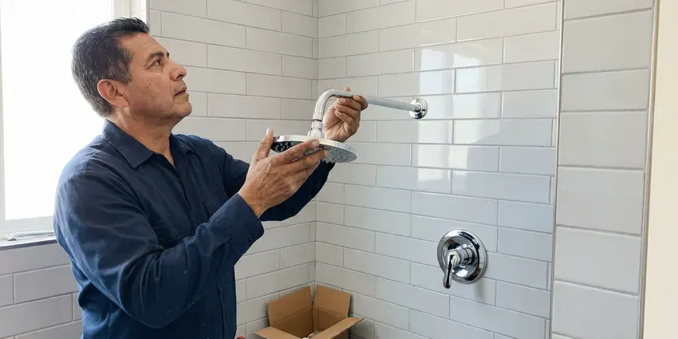

Urinal Installation in Green River, WY
Planning a restroom in Green River, WY? Send us the layout and you will get a urinal quote.
- Sensor and Manual Flush Valves
- After-Hours Installs
- Flat Written Price
- Local Green River Crews

Local Urinal Installers in Green River, WY
Send the fixture count and layout, and we will price the job.
Setting Urinals the Right Way in Green River, WY
JKV Plumbing installs urinals in offices, restaurants, schools and warehouses around Green River. The job usually starts with a carrier, a steel frame bolted to the floor inside the wall that holds the urinal so its weight never hangs on the drywall or the drain pipe. Drain, vent and supply follow. Finish work happens after tile.
Work we handle every week:
- Replace high-flow urinals with 0.5 or 0.125 gallon models
- Fit sensor flush valves, battery or hardwired
- Install Sloan and Zurn flush valves

Additional Bathroom Plumbing Services in Green River, WY
From toilets to showers, our bathroom plumbing team in Green River, WY repairs, installs, and replaces every fixture with clean, code-compliant work.


Customers
Why Choose JKV Plumbing for Urinal Installation in Green River, WY?
Carriers are where shortcuts show up. A wall-hung urinal bolted only to blocking can loosen over months of use, and once it moves, the outlet gasket leaks into the wall where nobody sees it until the drywall stains. We use floor-mounted carriers. Zurn, Watts, Wade and JR Smith make the ones we use.
- Water Savings, Waterless and low-flow options for heavy-traffic restrooms.
- Cleanliness, A level bowl and a seated gasket keep splash and odor down.
- Durable Setup, New gaskets, stainless bolts and correct outlet seals on every install.
Citywide Coverage
Commercial build-outs keep our crews busy. We work with general contractors on tenant improvements all over the area, so we know the inspectors and can schedule rough-in and final around the rest of the trades. Our schedules hold up.
Experienced Team
Clean work matters in a restroom. Our plumbers cover floors, protect tile and partitions, haul away old fixtures and packaging, and wipe down the new urinal and the wall around it before leaving. The restroom is ready to open.
Safety-First Approach
Urinal installs must meet Wyoming plumbing code for trap size and venting. ADA rules and permits are part of every urinal job we do. We keep the job inspection-ready.
Trusted Certified Green River Plumbing Services Professionals
At JKV Plumbing, we take pride in licensed, certified plumbing services throughout Green River, WY. Those papers on the wall mean something. Every repair, install and maintenance visit follows strict safety and quality rules, and the plumbers doing the work carry recognized industry credentials.
Call Us Now PHCC Plumbing Contractor Recognition
PHCC Plumbing Contractor Recognition Better Business Bureau (BBB) Accreditation
Better Business Bureau (BBB) Accreditation Angi Certified Pro
Angi Certified Pro ISO 9001 Quality Management Certification
ISO 9001 Quality Management CertificationFrom Carrier to Flush Valve in Green River, WY
Sensor Urinal Installation in Green River, WY
Sensor valves stop missed flushes and double flushes. Battery or hardwired valves get a tuned sensing range and an optional sanitary flush for idle periods. Batteries last a few years. Hardwired units need an electrician first.

Waterless Urinal Installation in Green River
Waterless urinals save the most water and need the most discipline. A cartridge or sealing liquid blocks sewer gas while letting urine through, and it must be replaced on schedule. Cleaning staff need a quick lesson. We show them how.
Urinal Upgrades and Water Savings in Green River, WY
Older urinals often use 1.5 gallons or more per flush. A low-flow bowl and matching valve on the existing carrier cut water use sharply. Ask your water utility about rebates. We provide the model numbers you need.
Residential Urinal Plumbing in Green River, WY
Home urinals use the same rules as commercial ones. The drain is usually 2 inch, the trap is built into the china, the fixture needs a vent within code distance, and the flush valve needs either a 3/4 inch supply or a lower-flow residential valve on 1/2 inch. Your city may want a permit. We check that first.
American Standard and Kohler Urinal Installation in Green River
American Standard and Kohler make the china we install most. Washbrook and Bardon models come in several flush ratings, and the valve has to match the bowl. The spec sheet makes matching easy. We order both together.
Home Gym and Garage Urinals in Green River, WY
A garage urinal saves tracking dirt into the house. The drain ties to the nearest stack, a vent or AAV goes in where allowed, and a compact bowl fits the space. Freeze protection matters in garages. Ask us about the layout.
Urinal Rough-In for New Restrooms in Green River
Tenant improvements need rough-in before the walls close. We lay out each urinal at 30 inches center to center and 15 inches from the side wall, set the carriers, and run waste, vent and supply so the finish crew can hang fixtures as soon as tile is done. Coordination with the GC is constant. Rough inspection comes first.

Urinal Replacement and Upgrades in Green River
Cracked or stained urinals are worth replacing. A hairline crack in vitreous china will eventually leak, and a bowl stained by years of hard scale often cannot be cleaned back to white, so a new fixture on the old carrier is usually the fastest fix. We check the carrier bolts first. Rusted bolts get replaced.
Urinal Installation Near Me in Green River, WY
Business hours are respected. Installs happen before opening, after closing or on weekends with a firm start time. A real person picks up. The number is (307) 393-4049.
Searching urinal installation near me usually means a restroom is down or a build-out is behind. Our crews do commercial work around town every week, so we can usually get a plumber on site within a day to look at the space and price it. You get a written quote.
JKV Plumbing at a Glance
- Licensed and insured plumbers serving Green River, WY
- 24/7 emergency service with same-day scheduling
- Upfront, flat-rate pricing before work begins
- 4.9-star rated by 782+ Wyoming customers
Green River Map
Green River Information
- Population
- 11,496
- Area codes
- Local
- Service area
- Green River and communities within 40 miles
- Nearby
- Rock Springs, Evanston, Lander, Rawlins
Commercial restrooms in Green River, WY see hundreds of flushes a day, so carriers, gaskets and flush valves have to be set right the first time.
Talk to a Plumber
Reach out to JKV Plumbing for honest, reliable plumbing from people who know the trade in Green River, WY.
Our Specialized Plumbing Services in Green River, WY
At JKV Plumbing, we handle the full list of plumbing services across Green River, WY. From leak detection to full system installs, our team works fast and charges fair prices on homes and commercial properties alike. Here are the core services we offer:


The Urinal Installation Process in Green River, WY
This is what to expect when we set a new urinal in Green River.
Request a Quote
Call (307) 393-4049 with your restroom layout. We schedule a site visit.
Site Assessment
A plumber looks at the wall, drain and supply and gives you a written price.
Installation
We set the carrier if needed, hang the urinal and connect the flush valve.
Frequently Asked Questions About Urinal Installation in Green River
Plan on $400 to $1,200 for typical jobs. The fixture type and how much rough-in work it needs drive the price, and specialized units or long pipe runs through finished walls add to it. That covers labor and standard materials.
Every install, in writing. The labor warranty is printed on your invoice and covers leaks or loose mounting from our work, while American Standard, Kohler, Sloan and Zurn cover their own fixtures and valves. We return at no charge.
Two layers of coverage. Our written labor warranty covers leaks and loose mounting from our work, and the fixture and flush valve makers cover defects in their own products, often for several years. Save the invoice.
Sure, with the right plumbing. We need a 2 inch drain, a vent and a properly sized supply, and compact low-flow models fit most spaces. Sensor valves work in homes too.
A lot, in a busy restroom. Swapping a 1.5 gallon urinal for a 0.125 gallon model saves about 1.4 gallons per flush, which in a restroom that sees 200 flushes a day adds up to roughly 100,000 gallons a year. Waterless units save the rest.
Two to four hours, usually. With a sound carrier and lines, removal, setting and valve hookup fit in one visit. Rusted bolts add time.
We would not recommend it. Outlet height, gasket seal, venting and backflow protection all have to be right or the job fails. Permits often require a licensed plumber.
New urinals almost always need one. Adding a fixture means new drain, vent and supply work, and most cities want a permit plus rough-in and final inspections, while a straight swap on existing lines may not need a permit at all. We pull permits when needed.
What People Are Saying About Our Plumbing Experts?

Karen W.
After our third pinhole leak in copper, we stopped patching. JKV Plumbing gave us a written plan room by room and repiped the house in PEX while we stayed in it. The crew covered our floors every morning and cleaned up every night.
Repiping · Green River, WY
Megan L.
Our upstairs tub drained so slowly that every shower turned into a bath. JKV Plumbing pulled a wad of hair out of the stopper and then snaked the line past the trap. Three months later it still drains fast.
Drain Cleaning · Rawlins, WY
Nathan E.
Our tankless heater kept throwing an error code and shutting off mid shower. The tech flushed the heat exchanger, which was full of scale, and replaced a bad flow sensor. Hot water has been steady for half a year now.
Water Heater Repair · Rock Springs, WYAngela D.
Our sump pump quit during a storm and the water was an inch from the basement carpet. JKV Plumbing put in a new pump with a battery backup that same evening. We have had two heavy rains since. It kicked on both times.
Sump Pump · Jackson, WY
Kevin O.
Before buying our house I paid for a sewer camera inspection. JKV Plumbing found a belly in the line that held standing water about forty feet from the cleanout. We used the video to get the sellers to fix it before closing.
Sewer Camera Inspection · Green River, WY
Mark T.
The floor drain in our office break room backed up every few weeks. The plumber ran a cable, then put a camera down and found roots at a joint about thirty feet out. Seeing it on the screen made the decision easy.
Drain Cleaning · Lander, WY